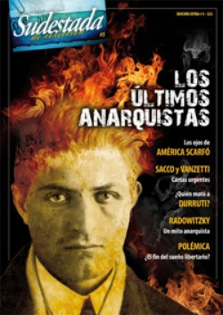

Buscar
¿El fin del sueño libertario?
El presente del movimiento anarquista parece signado por las preguntas, pero una sola alcanza a definir la totalidad de un proceso complejo y con años de historia: ¿se extingue el fuego ácrata? Divisiones, derrotas y errores potenciaron una crisis que hoy pone en peligro la supervivencia de un camino; el elegido por cientos de hombres y mujeres apasionados, rebeldes y libres hasta el fin.
Edición Especial N° 5
Los últimos anarquistas
Sudestada de Colección
Comprar edición impresaSumario
- ¿El fin del sueño libertario?
- Los caballeros de la Idea
- Un mito anarquista
- Caminos del ideario anarquista
- Los ojos de América Scarfó
- Líneas ácratas en La Pampa
- Una bala para Durruti
- Cartas urgentes
Compartir Articulo
1. Ayer
"El reo se sienta reposadamente en el banquillo. Apoya la espalda y saca pecho. Mira arriba. Luego se inclina y parece, con las manos abandonadas entre las rodillas abiertas, un hombre que cuida el fuego mientras se calienta el agua para tomar un mate.
Permanece así cuatro segundos. Un suboficial le cruza una soga al pecho, para que cuando los proyectiles lo maten no ruede por tierra. Di Giovanni gira la cabeza de derecha a izquierda y se deja amarrar.
Ha formado el blanco pelotón fusilero. El suboficial quiere vendar al condenado. Éste grita:
-Venda no.
Mira tiesamente a los ejecutores. Emana voluntad. Si sufre o no, es un secreto. Pero permanece así, tieso, orgulloso.
(...) Di Giovanni permanece recto, apoyada la espalda en el respaldar. Sobre su cabeza, en una franja de muralla gris, se mueven piernas de soldados. Saca pecho. ¿Será para recibir las balas?
-Pelotón, firme. Apunten.
La voz del reo estalla metálica, vibrante:
-¡Viva la anarquía!
-¡Fuego!".
El relato que precede estas líneas pertenece a la crónica de Roberto Arlt sobre el fusilamiento de Severino Di Giovanni, en febrero de 1931, durante la dictadura de José Félix Uriburu. Pero la crónica de Arlt dice más. Pese al tiempo transcurrido, este texto interroga, indaga, exige, dibuja los contornos violentos de una pasión, aviva el fuego de una idea que empujó a muchos que, como Severino, se asumieron parte, carne, fuego, hasta el final. Hasta el último grito, vibrante, frente al pelotón. Y el grito feroz de Severino resuena hasta hoy, y tiemblan, como ayer, los hipócritas, los opresores, los burgueses. Ese grito es sangre, es fuego, es revolución, y a ese grito le temen los que disparan. Por eso lo hacen.
Pero los años no pasan en vano, y el derrotero de aquella idea no parece ajustarse tanto a la crónica. Hoy la anarquía no aparece de frente, erguida, derrotada pero orgullosa, ante el pelotón de la Historia. Hoy la anarquía no grita, vibrante, feroz. Susurra, apenas, una historia que parece empujarla al abismo. Hoy la anarquía se apaga, y su fuego consumido es el fuego de miles de hombres y mujeres apasionados, decididos, libertarios. Hoy la anarquía es su propia sombra, desgajada por la soledad de algunos viejos ácratas que caminan pesadamente, que arrastran cansados su herejía como si aguardaran, todavía, la chispa inminente que les permita azuzar el fuego. Y cambiarlo todo.
Pero hubo un tiempo en que el fuego crecía, y parecía capaz de devorarse todo. Uno podría establecer rápidamente un punto de inflexión en la historia del anarquismo: la guerra civil española. Allí la derrota fue lapidaria. Pero eso sería adelantarse a la crónica.
Empecemos por la época en que los barcos traían fuego en sus entrañas. Traían a estos puertos, sin saberlo, una revolución hacinada en viejos cargueros. Eran cientos. Y huían. Y estaban dispuestos a todo. Eran anarquistas, pero también poetas rebeldes, creadores inquietos, militantes incansables, ejemplos morales; eran los monstruos temidos por el sistema, que ya estaba listo para combatirlos desde, casi, su primer pisada en el puerto de Buenos Aires. En las obras y en las fábricas ya se empezaban a escuchar nombres extraños en voces nuevas de oradores apasionados: Bakunin, Proudhon, Kropotkin, Malatesta. Y La Idea recorría las fábricas, y los barrios pobres, y, también, las comisarías. Cada militante anarquista era un productor constante, cada uno de ellos tomaba la iniciativa, imprimía periódicos, editaba libros, pedía la palabra en asambleas, planeaba atentados. No esperaban órdenes, no las toleraban, se sentían parte de un movimiento pero eran libres. No mandaban, pero no se dejaban mandar. Cada uno de ellos era el anarquismo, a su manera, con sus métodos, con sus contradicciones, con sus feroces discusiones internas, con sus errores y sus aciertos. Y florecieron así sindicatos, bibliotecas, libros, ateneos, imprentas, huelgas, bombas. Y eran miles, y marchaban, y gritaban. Pero ellos los vieron, vieron el fuego consumiendo las calles de Buenos Aires. Y temieron. Y salieron a perseguirlos, y los transformaron en mártires y en verdugos, y cada uno pagó y cobró las deudas de la muerte en las calles, con fiereza, sin titubeos. Fueron el terror de la burguesía. Ellos eran el fuego, la sangre, el miedo, y en la Argentina de principios de siglo el fuego se apagaba a balazos. Civiles y militares no dudaron.
Fusilar anarquistas se transformó en gestión de gobierno, y cuando no los baleaban, terminaban sus días en el fin del mundo, en el penal de Ushuaia.
(La nota completa en la edición Sudestada de colección # 5 Los últimos anarquistas)
Comentarios
Walter Marini y Hugo Montero
Articulos más vistos


LIBRERÍA SUDESTADA

Colección infantil

Distribuidora de Libros

Suscripción

Sudestada en URUGUAY

Otros articulos de esta edición
 El gran amor de Severino
El gran amor de Severino
Los ojos de América Scarfó
Detrás de Severino Di Giovanni y su impronta de anarquista vindicador, temido e implacable, se dibuja la historia de amor ...
 La muerte del líder anarquista
La muerte del líder anarquista
Una bala para Durruti
El enigma de la muerte del líder anarquista dispara siete conjeturas y ninguna certidumbre. Su asesinato en Madrid significó el ...
Caminos del ideario anarquista
Un recorrido por el legado de los más destacados pensadores ácratas de la historia. Desde Pedro Kropotkin a Emilio López ...
 Simón Radowitzky
Simón Radowitzky
Un mito anarquista
Fue el vindicador anarquista de la sangre obrera derramada por Ramón Falcón durante la Semana Roja. Pasó dos décadas preso ...
 Sacco y Vanzetti
Sacco y Vanzetti
Cartas urgentes
Su proceso fue un símbolo universal (y lo seguirá siendo hasta siempre) de la injusticia y la impunidad del sistema ...
 Editorial
Editorial